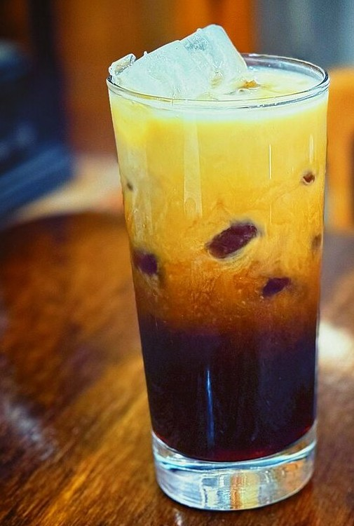

これは営業用サンプルです
掲載写真はフリー素材のイメージで、店舗の実際の写真ではありません。他地域で撮影されたもの・撮影地不明のものを含みます

メニュー
メニューは準備中です(お問い合わせください)
掲載できる内容がまとまり次第、このページでご案内します。お急ぎの場合は、お電話でお尋ねください。
お店のInstagramもご覧ください。
このページについて
掲載内容が決まり次第、このページに追加します。
価格:準備中(お問い合わせください)
イメージ写真
飲み物の一般的なイメージ写真です。実際の提供内容ではありません。